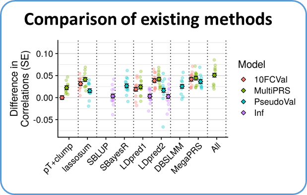
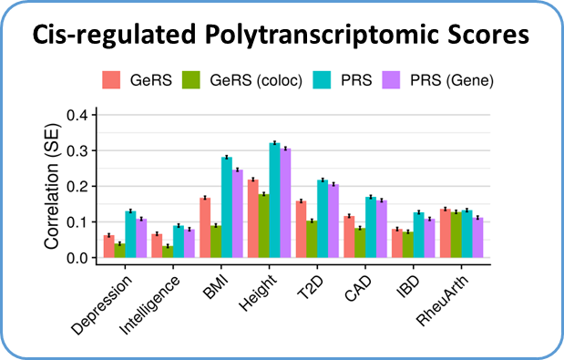
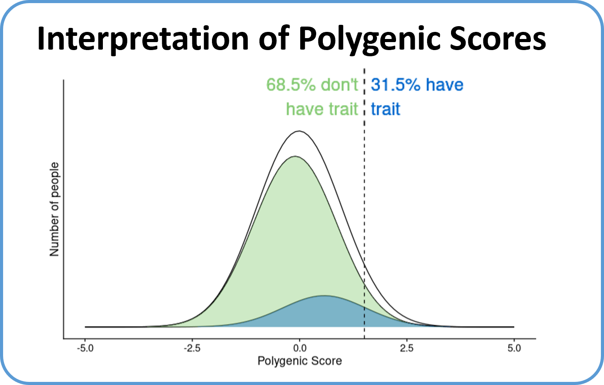
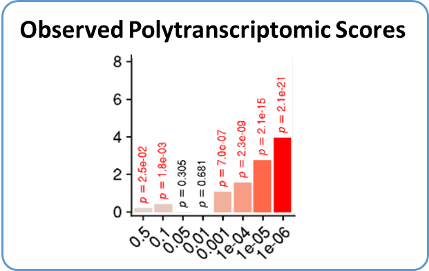
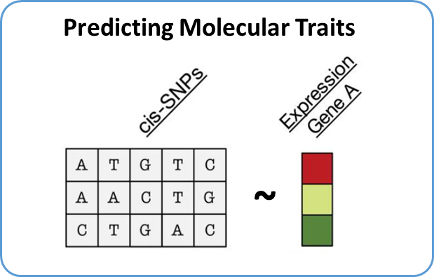

GenoPred Research
1. Comparison of existing polygenic scoring methodology
Polygenic scoring methodology is rapidly evolving. GenoPred benchmarks
leading polygenic scoring methods within a controlled environment,
providing a fair comparison of methods across a range of
settings.
Overview and code:
Click here
Paper:
Pain et al. Evaluation of polygenic prediction methodology within a
reference-standardized framework. PLoS genetics 17.5 (2021): e1009021.

2. Quantifying Polygenic Signal Mediated by Altered Gene Expression
Many genetic associations fall within regulatory regions of the genome.
We use imputed gene expression scores to evaluate the proportion of
polygenic signals linked to altered expression of
genes.
Overview and code:
Click here
Paper:
Pain et
al. Imputed gene expression risk scores: a functionally informed
component of polygenic risk. Human Molecular Genetics 30.8 (2021):
727-738.

3. Translating Polygenic Scores onto the Absolute Scale
The interpretability of polygenic scores is essential for their use
within a clinical setting. We developed a simple approach and tool for
converting polygenic scores from the relative scale onto the absolute
scale.
Overview and code:
Click
here
Paper:
Pain et al. A tool for translating polygenic scores onto the absolute
scale using summary statistics. European Journal of Human Genetics 30.3
(2022): 339-348.

4. Polytranscriptomic Scoring
Polytranscriptomic scores leverage large-scale transcriptome-wide
association study (TWAS) results and observed expression levels in a
target samples. We find these polytranscriptomic scores can be used to
predict disease risk and clinical
characteristics.
Overview and code:
Click
here
Preprint:
Pain et al. Harnessing Transcriptomic Signals for Amyotrophic Lateral
Sclerosis to Identify Novel Drugs and Enhance Risk Prediction. medRxiv
(2023).

5. Polygenic Prediction of Molecular Traits
Models using genetic variation to predict molecular traits, such as gene
expression, are useful for modelling the mechanistic effect of variants
identified using GWAS. However, meta-analysis of QTL datasets
necessitates the use of summary statistic-based methods for generating
these models. We evaluate a range of summary statistic methods for
prediting gene expression.
Overview and code:
Click
here
Paper:
Pain et al. Polygenic Prediction of Molecular Traits using Large-Scale
Meta-analysis Summary Statistics. bioRxiv (2022): 2022-11.

Created by Oliver Pain with colleagues at King's College London.